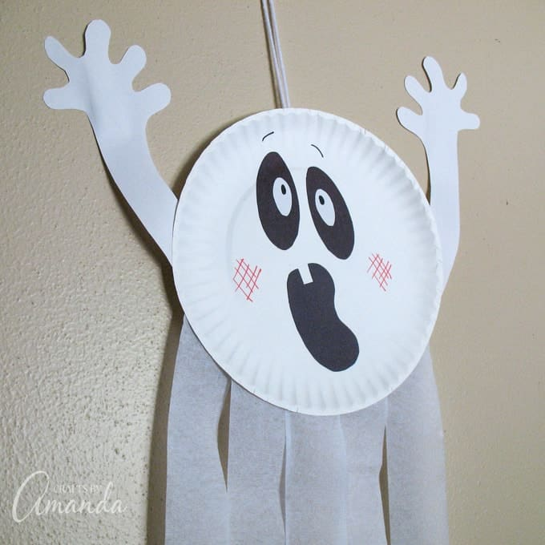
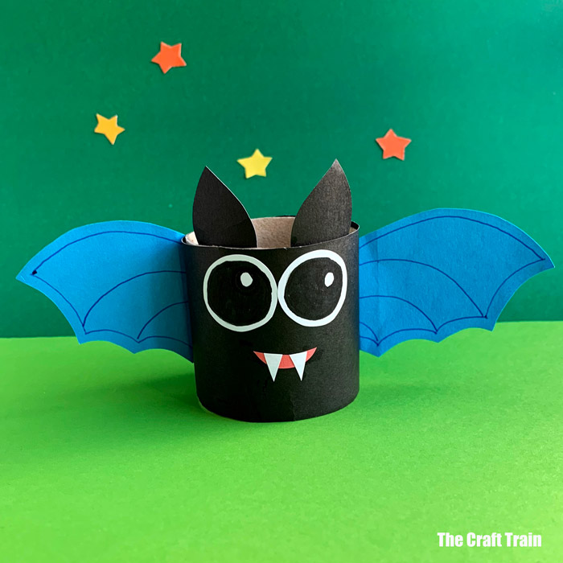
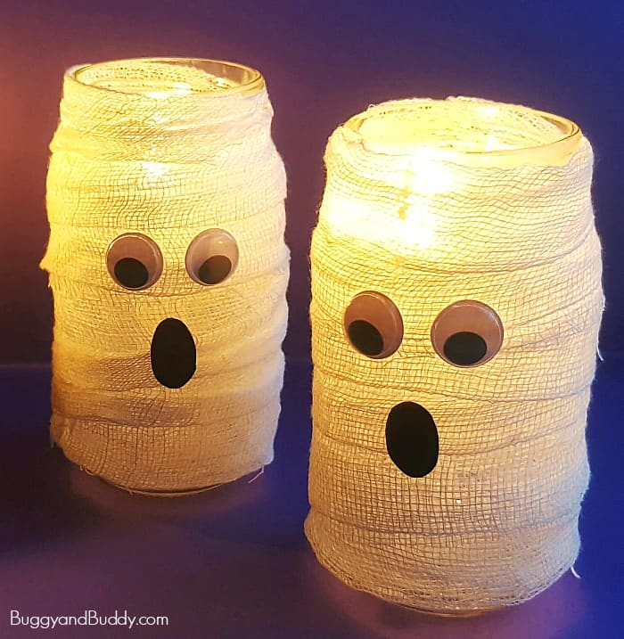
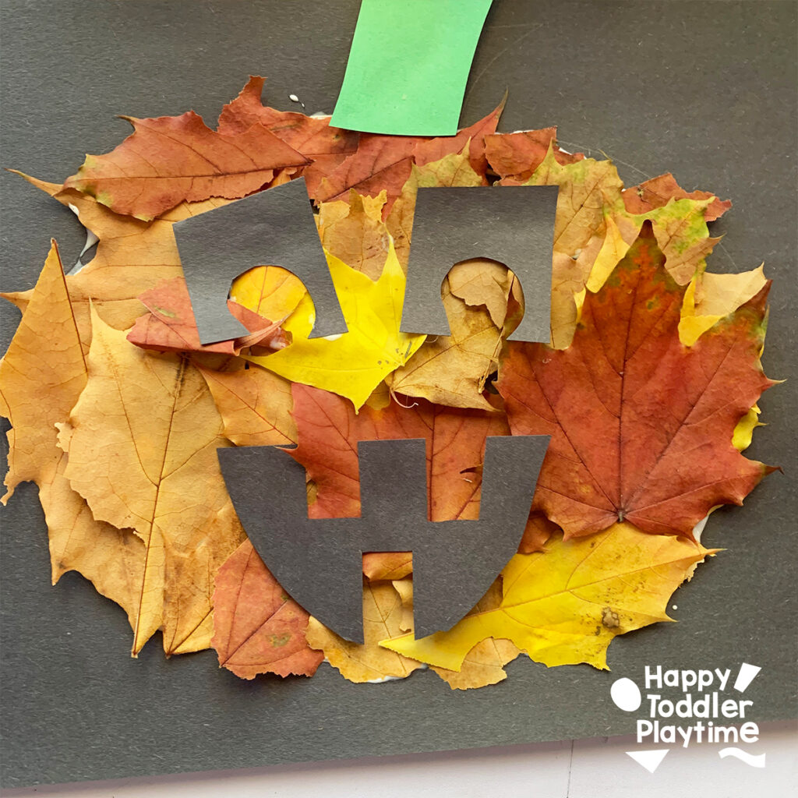
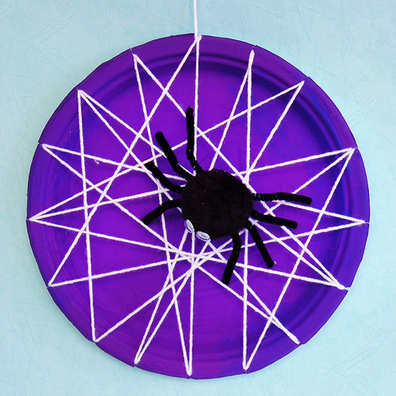
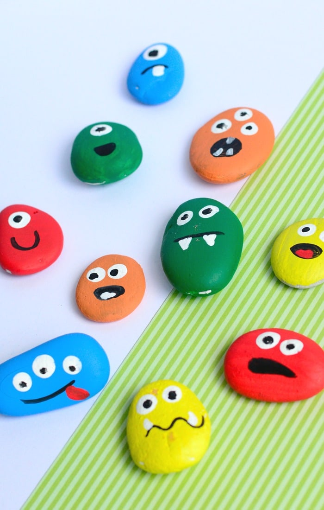
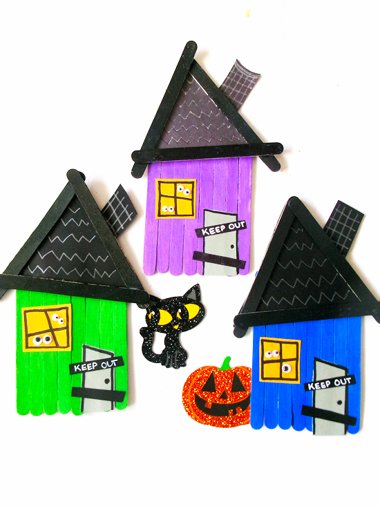
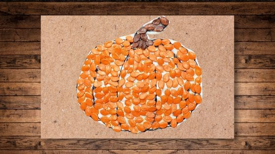
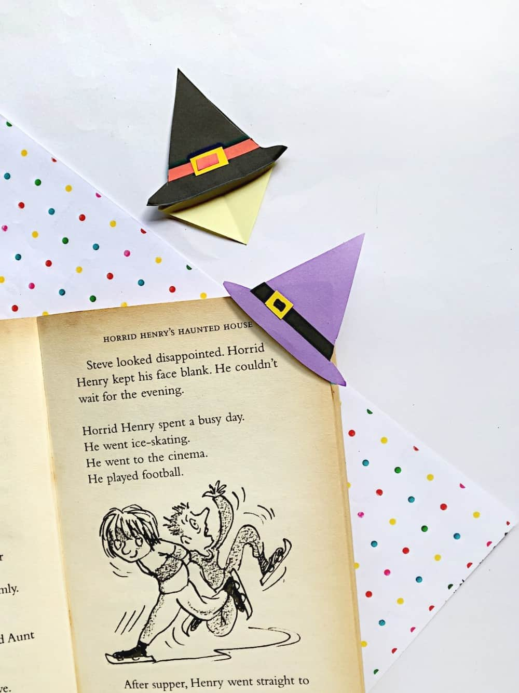

9 Fun Halloween Crafts
Easy, kid-friendly projects with simple materials. Click “How-to” to explore tutorials.

Paper Plate Ghosts
- Paper plate
- Tissue/streamers
- Black marker
- Tape
- Draw eyes/mouth on the plate.
- Tape tissue strips on the back for the “tail.”
- Punch a hole and hang with string.

Toilet Roll Bats
- Toilet roll
- Black paint
- Paper wings
- Googly eyes
- Paint the roll black; fold top for bat ears.
- Cut wing shapes; glue to the back.
- Add eyes and draw fangs.

Mummy Jar Lanterns
- Glass jar
- Gauze/tape
- Googly eyes
- LED tea light
- Wrap jar with gauze; secure with tape.
- Stick on googly eyes.
- Put an LED candle inside.

Leaf Rubbing Pumpkins
- Leaves
- Paper
- Crayons
- Scissors
- Place leaf under paper; rub with crayon.
- Cut into pumpkin shapes.
- Add stems and jack-oʼ-lantern faces.

Yarn Spider Web Plates
- Paper plate
- Hole punch
- Yarn
- Paper spider
- Punch holes around plate edge.
- Weave yarn to form a web.
- Add a cut-paper or pom-pom spider.

Painted Rock Monsters
- Smooth rocks
- Acrylic paint
- Markers
- Googly eyes
- Paint base colors; let dry.
- Add eyes, teeth, and scars.
- Seal with clear coat (optional).

Popsicle Stick Haunted House
- Craft sticks
- Glue
- Paint
- Paper windows
- Glue sticks to form a house shape.
- Paint dark colors; add roof.
- Glue paper windows/door; draw webs.

Pumpkin Seed Art
- Clean pumpkin seeds
- Food coloring
- Paper
- Glue
- Dye seeds orange/green/purple; dry.
- Sketch a simple shape.
- Glue seeds to fill the design.

Witch Hat Bookmarks
- Black/orange paper
- Scissors
- Glue
- Gold pen
- Fold corner bookmark base.
- Cut hat/brim; glue to the base.
- Add buckle/stars with pen.